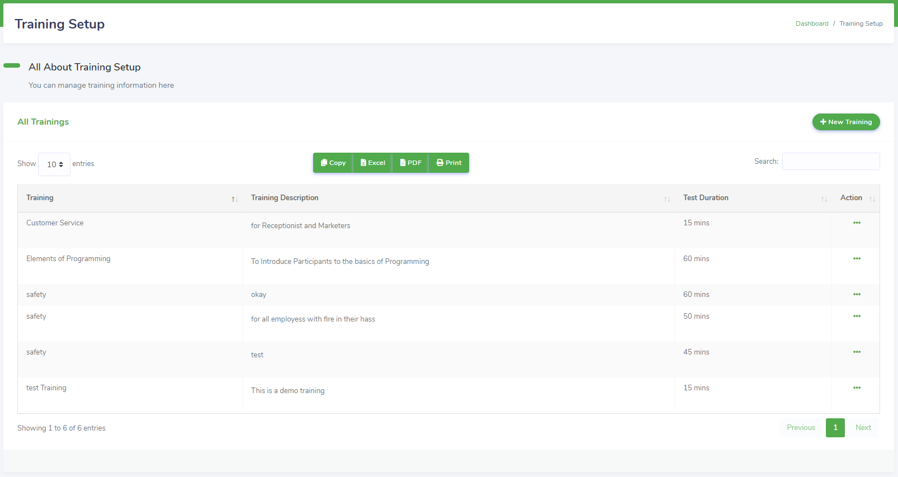
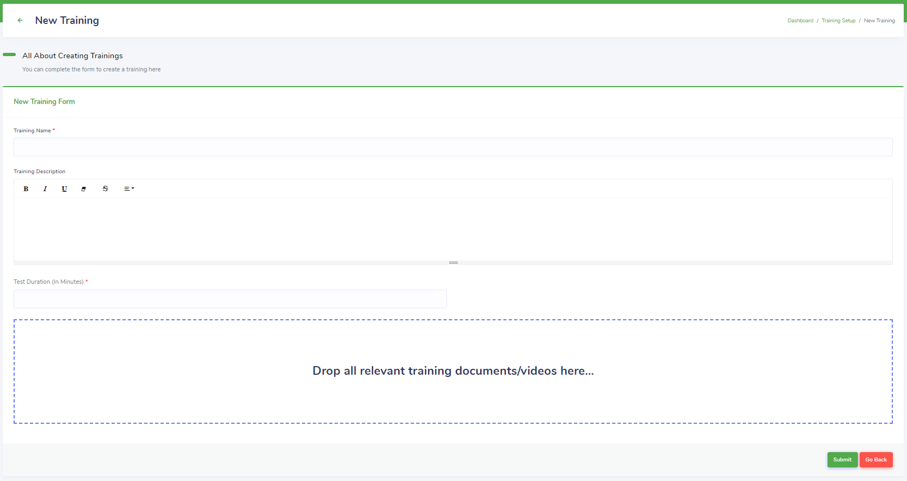
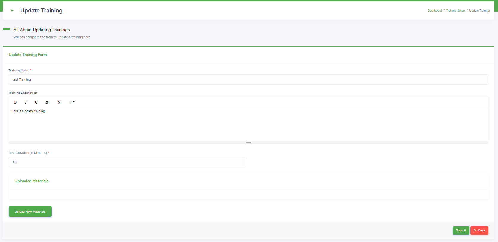
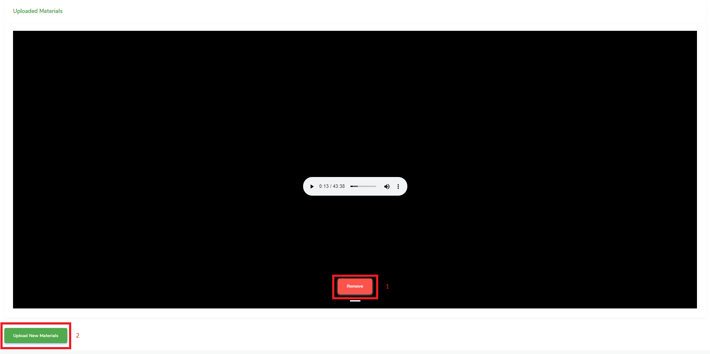
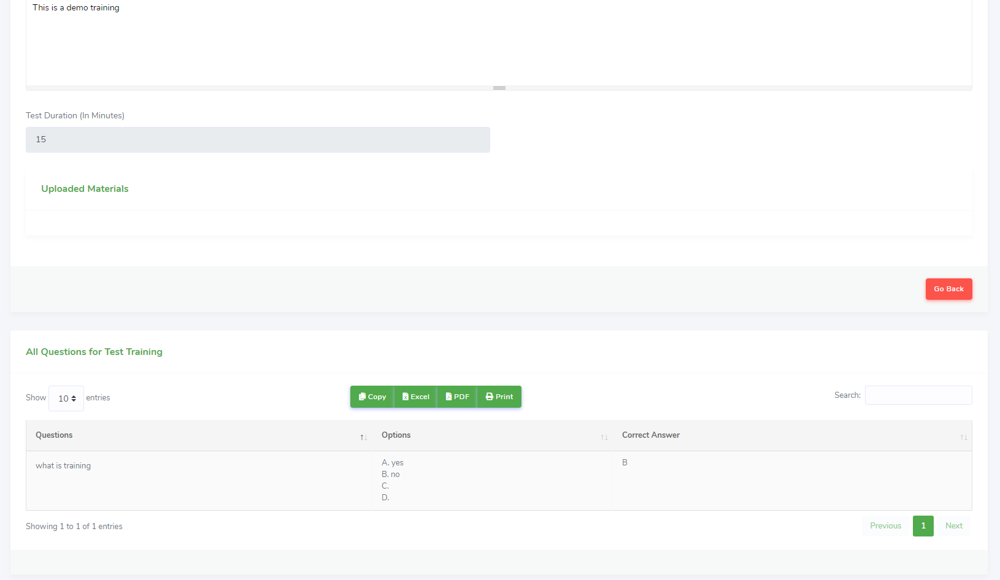
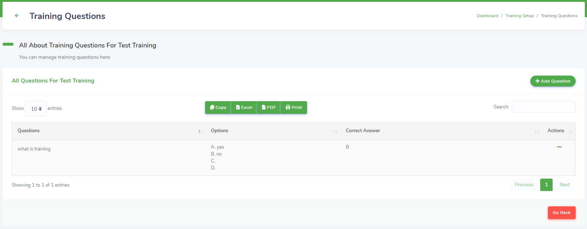
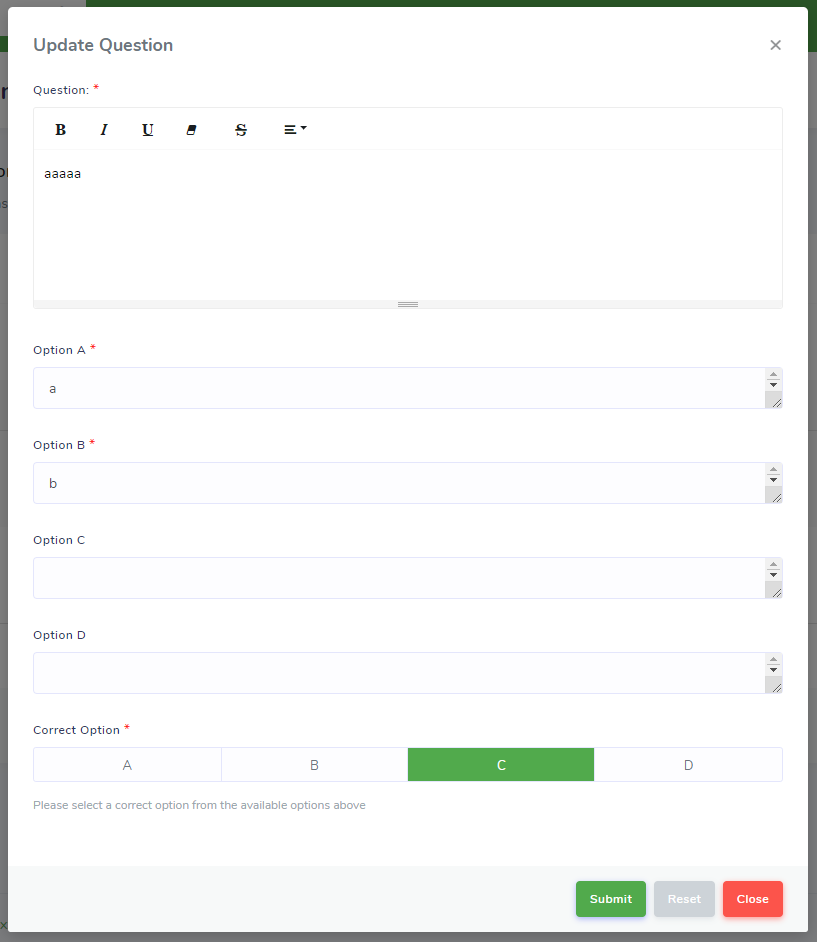

Training Setup
Training setup (Figure 38) stores training information including the training name, training description, training materials (documents, images, audio or video files), and duration of the test to be taken after the training on the IH system. Trainings are assigned to employees who are required to take them and complete the corresponding test. The test questions can be added to the training once the training is created.
Figure 38: IH AP Training Setup

To add new training information:
Action: Click on the New Training button to open the New Training task view (Figure 39).
Figure 39: IH AP New Training

Fill in the fields and click the Submit button to store the training information on the IH system. The new training will be displayed in the All Trainings table (Figure 38) of the preceding view.
To edit the training:
Action: Click on Actions (see Working with Tables) for the corresponding training in the All Trainings table to display the list of actions. Click on Edit Training to open the Update Training task view (Figure 40).
Figure 40: IH AP Update Training

Modify the desired fields and click Submit to update the training on the IH system.
Figure 41: IH AP Edit Training Materials

However, to also manage the uploaded training materials (Figure 41), click Remove (1) to remove the current training material (if more than one white pill button are underneath the Remove button, click on them to cycle between training materials), click Upload New Materials (2) to upload new materials to the training, and click Submit to update the training on the IH system.
To view the training:
Action: Click on Actions (see Working with Tables) for the corresponding training in the All Trainings table to display the list of actions. Click on View Training to open the View Training task view.
The View Training task view differs from the Update Training task view in that modifications cannot be made to the training in the View Training task view. Also, the View Training task view displays information about the test questions in the All Questions For Training-Name (Figure 42) table for the current training being viewed where the Training-Name is the current training being viewed.
Figure 42: IH AP View Training

To manage test questions:
Action: Click on Actions (see Working with Tables) for the corresponding training in the All Trainings table to display the list of actions. Click on Training Questions to open the Training Questions task view (Figure 43).
Training questions stores test question information including the question, the question’s objective options and the correct answer for the question. Employees will answer test questions for trainings they are assigned in the allotted test duration and be graded based on the number of correct answers they select.
Figure 43: IH AP Training Questions

To add test questions:
Action: Click on the Add Question button to bring up the Add New Question modal dialogue (Figure 44)
Figure 44: IH AP Add New Question
Fill in the fields and select the correct option from the inputted options and click Submit to store the question on the IH system.
Note: The first two options are required, as indicated. The last two options are not required. However, to prevent unpredictable results, users must select a correct option from the options the user inputs (that is, select an option that exists as the correct option).
To edit test questions:
Action: Click on Actions (see Working with Tables) for the corresponding question in the All Questions For Training-Name table to display the list of actions where the Training-Name is the current training being viewed. Click on Edit Training to bring up the Update Question dialogue modal (Figure 45).
Figure 45: IH AP Update Question

Modify the required fields and click on Submit to update the question on the IH system.